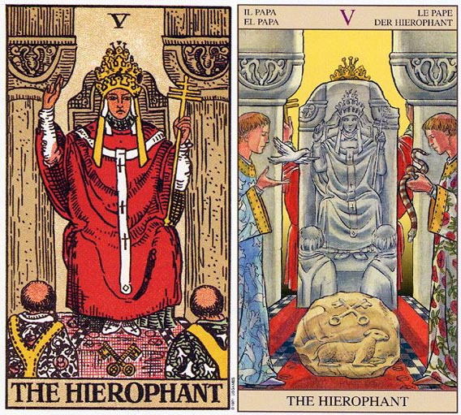

塔罗牌教皇（The Hierophant）解释
相关语：援助 相关星象：木星
教皇代表需要为你的心灵成长，及人生方向付起责任。
教皇 THE HIEROPHANT 暗示你屈服于某人或某个团体依照他人的期望行事，流于形式和规矩。 逆位的代表新的思想形式。老旧观念的退却。
教皇坐在一张华丽的椅子上，右手举向天空，左手持着一根有三重十字的宝杖。在白上衣外面罩了一件红色长袍，头上戴着一顶三层的金色王冠。袍带上面有三个十字图案，连鞋子上面也有十字图形。座位前放了两只有十字图案的金钥匙，脚前跪着两名信徒。其中一名所穿的衣服上有红玫瑰图案，另一名衣服上则有白百合，这些图案令人联想到魔术师。
身后的石柱是暗灰色的，因为这座教堂（或建筑物）及其结构对于真理的追寻而言，实属次要。他手上及袍带上的三重十字，以及三重皇冠意指圣父、圣子及圣灵，有些人则视之为灵魂、心智及肉体。
教皇以他的右手传导来自天空的能量，这正如同魔术师，不过他是透过宝杖将能量传导给信徒。信徒们觉得他们需要这教皇，以便和上帝有所接触，他们并不知道他们随时可以直接和上帝接触。教皇为他们示范这么做的方法，给了他们方向，只要遵循着，就可以找到和上帝连结的道路。
这是一张有关宗教信仰或传统的牌。皇帝负有提供物质条件的责任，而教皇的义务则是提供心灵上的方向和引导。在组织化的宗教或教堂中，教皇为一般人展示了解他们心灵需求的方法，而这种方法并不需付出多大的努力，或放弃太多的自我。教堂提供一个向心灵接近的道路，让那些没有求道之心的一般人，不致成为迷途的羔羊。
传统上十字钥匙是一金一银的，金钥匙开启外在的世界，银钥匙则打开内心世界，没有着两把钥匙，你可能会失去这个世界所蕴藏的知识。在莱德-伟特所涉及的牌中，两把钥匙都是金的，暗示如果只遵循外在教条，是不太可能真正了解其中所传递的讯息。只要你允许他认为你和上帝联系，你就得冒着相信他们对上帝或宇宙的认知的危险，而不能藉有你自身的直接经验来发展自己的理解。你丧失了发展准确判断力所需要的直接经验。
简单而言，教皇（第五张牌）暗示你的心胸正趋于窄小，因为一旦你允让别人负起你心灵成长的责任，你就不太可能让自己得到直接的经验。只有透过直接的经验，你才能亲身体验到上帝，并确定谁或什么是上帝。如果我告诉你我所体验到的上帝，那你需要的是信仰。如果你亲自去接触上帝，你就可以得到一个或许会带来理解的经验。相信你不了解的事情实在是一桩冒险的事情。而亲身去经验可以提供证据，消除信仰上的需要。
这两根石柱代表使你免于做选择、免于负起个人责任的结构。通常教皇代表教堂、教条及教育。这一张代表金牛座的牌（和五角星国王及五角星四有相同的意义）。金牛座的课题之一是“我的方式并不是唯一的方式”。并非相信、进入或生活于某种状况的唯一方式。这个课题在宗教团体的身上表现的特别明显，他们绝对相信他们与上帝接近的方式是唯一值得拥有的方式，是一种“只有和我们拥有同样信仰的人才可以得到救赎”的方式。
教皇（The Hierophant）牌面解读
他是宗教和精神上的权威。它总会为我们找到心灵上的出口，他的慈悲与德行，必能指示我们不会误入歧途，踏上认清良心，觉今是而昨非的道路。尤其当你感到内心愧疚的时候，他总会乐於静听你的忏悔。 这是一张代表唤醒良心与善良觉醒的牌，同时也是张关于宗教信仰与传统的牌。同皇帝所代表的物质主宰相比，他更趋向于精神层面，他是精神方面的权威，是未知世界的解释者。因为教皇能够直接与上帝联系，他用慈悲与洞察力试图拯救世人的灵魂，并用自己的言论引导人们走向正途。
牌面中的教皇高举双手向世人传播教义，信徒们虔诚地跪在地上聆听他的教诲。然而需要注意的是他同时也是传统知识和保守道德的代表，他控制人们的思维，使人的眼界变得狭小。只有彻底放弃陈旧的一切，探索新的解决方式，可能还有希望。
教皇（The Hierophant）正位释义
温柔、博爱、受人信赖、受重视、工作出色、贡献突出、眼界狭窄、从善如流而得到好处、有贵人相助、适宜接触宗教、与年长的异性有缘、姻缘佳
援助，同情，宽宏大量，可信任的人给予的劝告，良好的商量对象，得到精神上的满足，遵守规则，志愿者。
信心十足，能够正确理解事物的本质，工作上外来的压力过多，别人对你的期望值也很高，使你有被束缚的感觉。应该寻找新的工作方法，尽管会面对很大的阻力，但结果会证明这样做是值得的。爱情上屈从于他人的压力，只会按照对方的要求来盲目改变自己，自以为这是必要的付出，其实不过是被迫的选择。伴侣也不会对你保持忠诚，并很难满足双方真实的需要。
教皇（The Hierophant）逆位释义
冷漠、善于表达、太罗嗦、孤立无援、成功无望、眼界开阔、思路敏捷、改变以往感情上的不足、不被认同的恋情、对伴侣关心过度、姻缘淡
错误的讯息，恶意的规劝，上当，援助被中断，愿望无法达成，被人利用，被放弃。
牌面倒立则表示事业上多了些灵活的态度，不再刻板遵循旧有的方式，勇于创新形成自己独特的理念，为自己的真实想法而活、而工作。感情上开始正视自己对感情的真实感受与做法，尽管依旧会听取对方的意见，但以不会全盘接受。当你感到无法接受对方的意见时，会及时与其沟通，找出改善关系的做法。
大体上的意义
教皇暗示你向某人或某个团体的人屈服了。或许这正是你为自己，及心灵上的需求负起责任的时刻了。你目前的行事作风并非应付事情的唯一方式，假设你愿意加以探索的话，或许你就会找到新的可能。
倒立的教皇
塔罗牌中所有倒立的五都意味着心胸开阔，教皇亦不例外。它代表新思想、观念的形成，或拒绝一些流于俗态的观念。它也可以说你在为自己人生写脚本，照着自己对生命的理解而活。
现在你正为自己的心灵发展负起责任，虽然道路可能是崎岖不平的，然而这通常是值得的。有时候倒立的教皇可能表示，你为了一个具有非正统理念的教派或团体而排斥正统的理念或理论，而这个教派或团体，会为你的心灵发展负起责任——为了一个团体而放弃另一个团体。有些人需要别人为他们负责，而有些人则会利用这种需要，所以导师及大师就越来越多了。
我并不是在暗示说这些人没有找到他们的方法或道路，但是你们的道路却不见的就是他们的道路。遵循他人的脚步而行，并不保证就一定会得到启发。可能会有人不同意我的看法，例如在法国的卢尔德（Lourdes），于西元一八五八年时，圣母玛丽亚曾向一名十四岁女孩Bernadetle Soubirous显灵，而今该地每年吸引了逾五百万游客或朝圣者的到访。
两性关系上的意义
教皇所形容的这段关系，是遵从他人期望的一段关系。这段关系中的伴侣很难忠实于自己，也很难忠实于在两性关系中他们真正的需求，因为他们在适应他人对他们的期望上觉得压力重重。
西莉亚抱怨先生侏罗日以继夜的工作，以至于他们的婚姻生活变得索然无味。当我在稍微深究时，我发现她会和侏罗结婚，是由于她家人的大力赞成。她坦言已开始她宁愿去环游世界，或许在决定一位长期伴侣之前，还可以多碰到一些对象，然而她的家人觉得她是打算“做一些恣意妄为的事”，因而向她施压要她结婚。起初，她颇享他们的好意，但是四年之后，她便为没有反抗他们的压力而深感懊悔。
教皇也可能暗示你的两性关系已流于一种形式或规矩，你的态度变成“别人怎么做，我就跟着怎么做”，而这并不是去经历一段两性关系的唯一方式。你应该去找寻另一种新方式，可能你会感受到周遭的人所形成的阻力，但后来还是可以证明这么做是值得的。